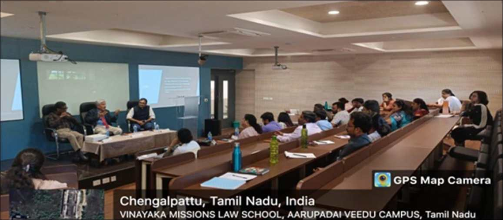
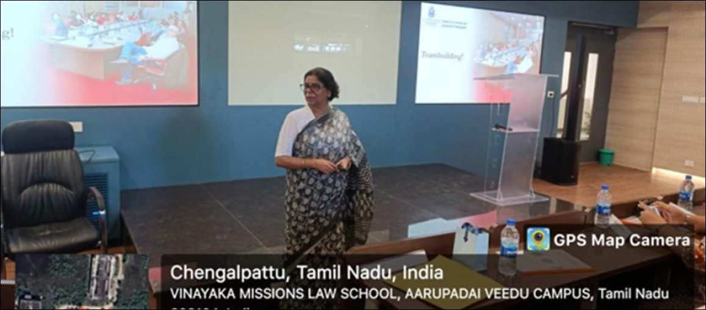
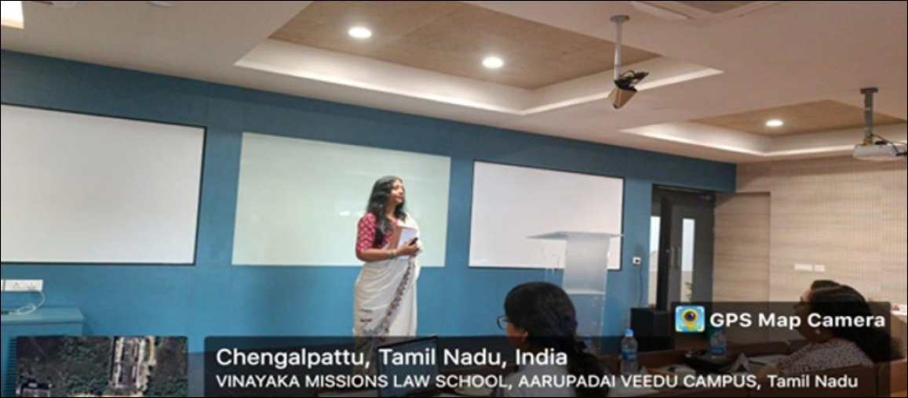
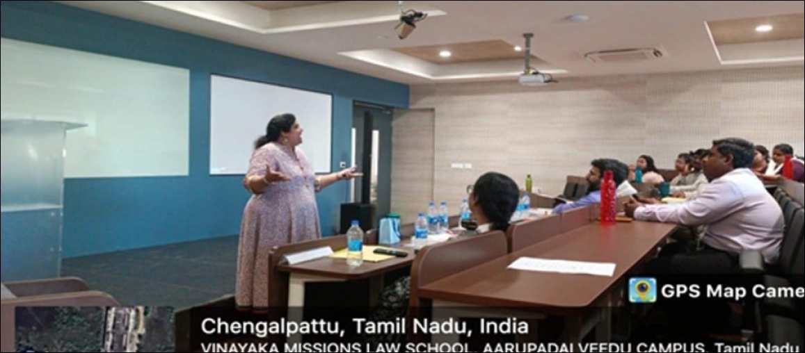
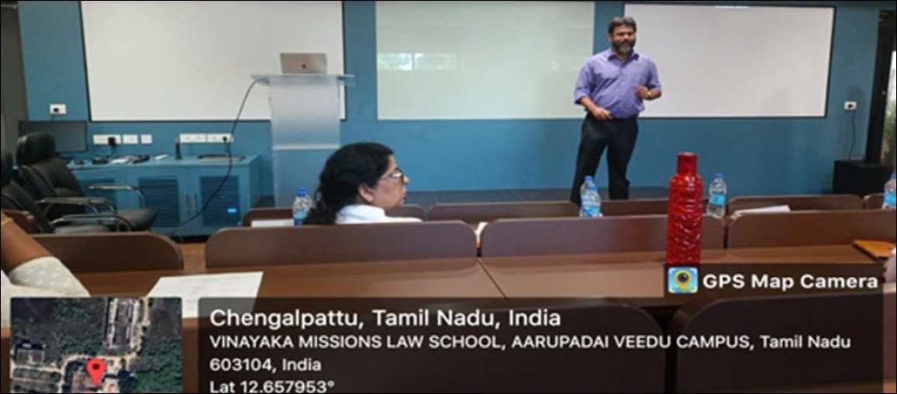

Professional Development Program on Becoming an Inspiring Teacher
We’re thrilled to share the resounding success of our recent
Professional Development Programme conducted at the Vinayaka
Missions Law School on 15th September 2023. We’d like to extend
our heartfelt gratitude to all our distinguished resource persons
in making this event a grand success. Throughout the programme, we
delved into essential topics such as the Craft of Pedagogy, the
Art of Writing, the Ethics of Teaching, Publishing in High-Impact
Journals, and Team-Building. Participants gained practical
insights, from innovative teaching techniques like flipped
classrooms and case study methods to the importance of maintaining
ethical teaching practices and effectively utilizing technology in
education.
Below is the report of all the sessions and their key takeaways.

VMLS | 20 minutes ago | 1 min read
Opening Valedictory: 9.30 AM to 10.30 AM
In the opening valedictory session, Dean Dr. Ananth Padmanabhan, a
distinguished figure in the field of education, warmly introduced
our esteemed speakers. His gracious welcome set the tone for an
engaging and insightful session.
Prof. Dr. Sreejith, in his enthusiastic and inspiring speech,
shared his insights on becoming an inspiring teacher. He drew
inspiration from both real-life and fictional mentors, such as the
legendary Rick Brathwite and the wise Koboyashi Master. Prof. Dr.
Sreejith emphasized the significance of role models in shaping
one’s teaching philosophy and encouraged educators to aspire to be
the kind of teacher who leaves a lasting positive impact on their
students.
Prof. Dr. B.S. Chimni, in his rousing address, delved into the
concept of leading a “life of the mind” as a crucial aspect of
being an effective educator. He underscored the importance of
engaging in intellectual discussions and cultivating a deep
understanding of ideas beyond the confines of a traditional
teaching role. Prof. Dr. Chimni also highlighted the relevance of
the pedagogy of the oppressed, especially during times of crisis,
as a means of empowering learners. He stressed the need for
synergy between teaching and research activities, as well as a
modern teacher’s proficiency in utilizing technology to enhance
the learning experience. Furthermore, he advocated for an
environment of benign neglect regarding dissenting and radical
opinions within educational institutions to foster a fruitful and
diverse learning environment. Prof. Dr. B.S. Chimni’s talk
inspired attendees to not only be educators but also intellectual
leaders in their fields, promoting an enriching educational
journey for their students.

VMLS | 20 minutes ago | 1 min read
Technical Session I (10.30AM to 11.30AM) : The Craft of Pedagogy
During the session on the Craft of Pedagogy led by Prof. Dr.
Tanushree Sharma, participants delved deeper into innovative
teaching techniques. The concept of flipped classrooms, for
instance, was explored in detail, highlighting how it empowers
students to take ownership of their learning by engaging with
course materials before class. Case study methods were discussed
as a powerful tool for contextual learning, allowing students to
apply theoretical knowledge to real-world scenarios.
Activity-based learning, an interactive approach that encourages
hands-on experiences, was demonstrated, illustrating its
effectiveness in promoting critical thinking and problem-solving
skills. Scaffolding, a strategy for breaking down complex topics
into manageable chunks, was introduced as a means to support
students’ gradual skill development. The jigsaw method, a
cooperative learning technique, was also explained, showing how it
promotes collaboration and shared expertise. Furthermore, the
session provided a comprehensive breakdown of Bloom’s Taxonomy,
helping educators align their teaching objectives with the
cognitive skills they aim to develop in their students.

VMLS | 20 minutes ago | 1 min read
Technical Session II (11.30 AM to 12.45 AM): The Art of Writing
Prof. Deepika Jain’s session on The Art of Writing offered
participants a holistic approach to academic writing. Beyond
discussing the mechanics of thesis formulation and the critical
evaluation of existing academic discourse, the session underscored
the importance of maintaining a consistent writing practice
throughout the year. Attendees gained insights into effective time
management and goal setting to ensure continuous progress. The
discussion on citation management expanded to include guidance on
proper citation styles and the importance of avoiding plagiarism.
Prof. Jain also encouraged participants to infuse their writing
with a personal touch, emphasizing that maintaining the soul of
their work can make their contributions to the academic community
more compelling and memorable.

VMLS | 20 minutes ago | 1 min read
Technical Session III (2.45 AM to 3.45 AM): The Ethics of Teaching
The session on The Ethics of Teaching, led by Prof. Dr. Mousumi
Mukherjee, delved into the emotional dimension of teaching. Prof.
Mukherjee stressed that effective teaching goes beyond the
dissemination of knowledge; it requires building an emotional
connection with students. Educators were guided on how to achieve
this connection by being empathetic, approachable, and
compassionate. Vulnerability was highlighted as a strength,
allowing teachers to relate to their students on a human level and
create an atmosphere of trust and authenticity. Intellectual
competence and curiosity were presented as vital qualities,
enabling teachers to instill a passion for learning in their
students. This session served as a reminder that the ethical
foundation of teaching lies in fostering an environment where
students feel valued, respected, and inspired to excel.

VMLS | 20 minutes ago | 1 min read
Technical Session IV (4.00 PM to 5.00 PM): Publishing in
High-Impact Journals
In the session on Publishing in High-Impact Journals, Prof. Arjya
Majumdar went beyond the basics of selecting journals based on
citation scores. Participants gained a deeper understanding of the
publication process, from crafting compelling abstracts and
selecting appropriate journals to managing the flow of their
research papers effectively. Prof. Majumdar also shared valuable
insights on suggesting suitable reviewers for their submissions
and navigating the peer-review process. In addition to discussing
the importance of citing sources correctly, the session explored
the challenges posed by cloned and predatory journals, emphasizing
the need for rigorous scrutiny. Prof. Majumdar also addressed the
prevailing “publish or perish” culture in academia and encouraged
participants to strike a balance between crafting high-quality
content and ensuring its marketability to reach a broader
audience.
The Team-Building Session (5.00 PM to 5.30 PM)
The Team-Building Session, led by Prof. Tanushree Sharma, provided
participants with a practical experience of team dynamics and
cooperation. Activities such as Charades (Dumb Charades) and
verbal football not only promoted teamwork but also demonstrated
how such engaging exercises can be utilized in a classroom setting
to enhance collaboration among students. The icebreaker sessions
served as effective tools for building camaraderie among
participants, showcasing the power of interactive and enjoyable
activities in fostering a positive learning environment. Overall,
this session not only delivered key insights into team building
but also left participants with memorable ideas for promoting
collaboration in their own classrooms.